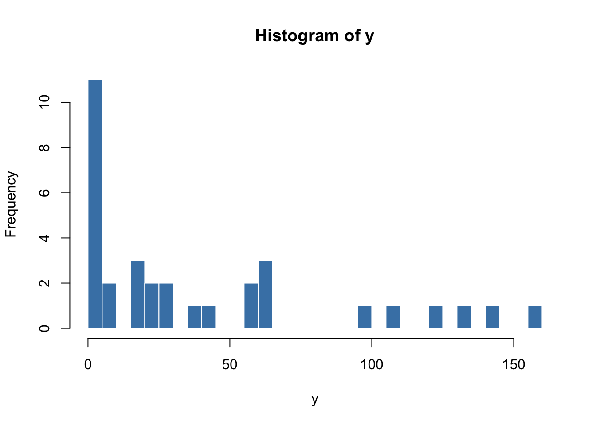
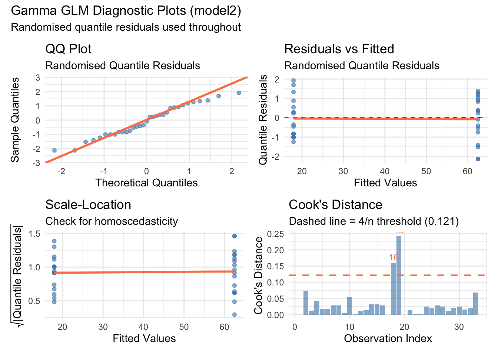
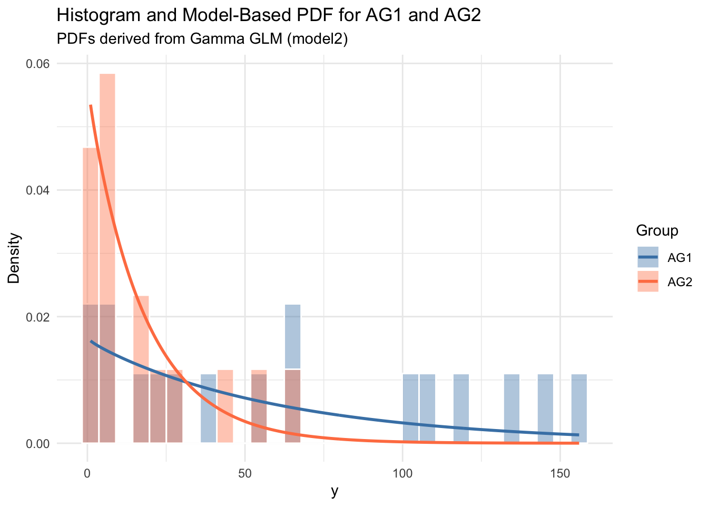
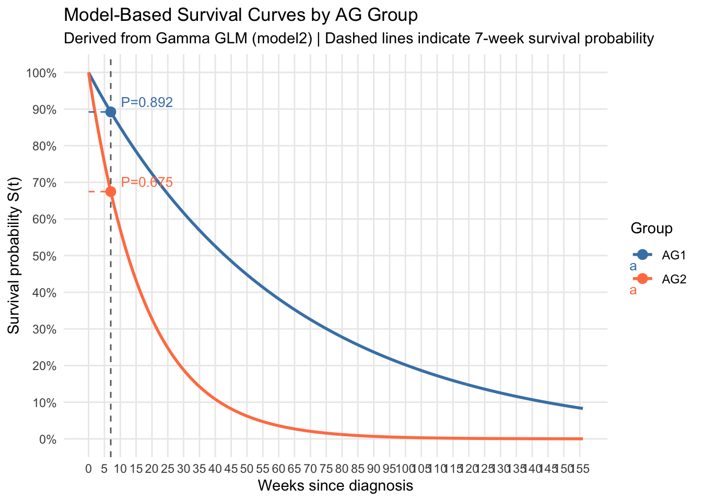

df <- read.table("data.csv", sep = "\t", header = TRUE)
dim(df)[1] 33 3This is a small demonstration of Gamma regression. Data is not censored. The dataset and the analysis is based on the book “Analysis of Variance, Design and Regression: Linear Modeling for Unbalanced Data”, Second Edition, Ronald Christensen, Chapter 22 “Exponential and Gamma Regression: Time-to-Event Data”.
The assumption of the model we are going to use is that each observation in the dataset comes from a Gamma distribution. That is
\[ \begin{aligned} Y &\sim Gamma(\alpha, \lambda), \\ f(y;\alpha, \lambda) &= \frac{\lambda^\alpha}{\Gamma(\alpha)}\exp(-\lambda y)y^{\alpha -1} \end{aligned} \]
For \(\alpha=1\) we obtain the exponential distribution. The mean of the Gamma distribution is \(\frac{\alpha}{\lambda}\) and its variance is \(\frac{\alpha}{\lambda^2}\). The following linear model is used:
\[ \begin{aligned} \log(\frac{\alpha}{\lambda_i}) &= x_i' \beta \end{aligned} \]
That is we assume that the log of the mean is a linear function of the covariates.
We load the dataset for our analysis.
df <- read.table("data.csv", sep = "\t", header = TRUE)
dim(df)[1] 33 3We see the dataset consists of 33 rows and has three columns.
head(df) y WBC AG
1 65 2300 1
2 156 750 1
3 100 4300 1
4 134 2600 1
5 16 6000 1
6 108 10500 1The y column represents: number of weeks a patient survived after diagnosis of acute myelogenous leukemia.
WBC stands for White Bood Cell Count at diagnosis.
AG is a grouping variable (taking values 1 for AG positive and 2 for AG negative)
hist(df$y,
main = "Histogram of y",
xlab = "y",
col = "steelblue",
border = "white",
breaks = 30)
We see as expected no negative values in y. Also we observe that most values are clustered fairly close to zero.
# Since AG takes only two values (AG positive and AG negative) we use it as a factor in
# the anaylsis.
df$AG <- as.factor(df$AG)We use the glm package in R to perform a Gamma regression.
# We use the following model hierarchy.
model1 <- glm(y ~ 1, data = df, family = Gamma(link = "log"))
model2 <- glm(y ~ AG, data = df, family = Gamma(link = "log"))
model3 <- glm(y ~ WBC + AG, data = df, family = Gamma(link = "log"))We have a hierarchy of nested models:
model1 is the baseline (intercept only)
model2 tests whether AG alone explains y
model3 tests whether WBC adds explanatory power on top of AG
Since the models are nested we can use an Analysis of Deviance.
anova(model1, model2, model3, test = "LRT")Analysis of Deviance Table
Model 1: y ~ 1
Model 2: y ~ AG
Model 3: y ~ WBC + AG
Resid. Df Resid. Dev Df Deviance Pr(>Chi)
1 32 58.138
2 31 46.198 1 11.9401 0.0007656 ***
3 30 44.292 1 1.9065 0.1787569
---
Signif. codes: 0 '***' 0.001 '**' 0.01 '*' 0.05 '.' 0.1 ' ' 1We stick to model2 since the p-value for the comparison of the second and third model is not significant..
summary(model2)
Call:
glm(formula = y ~ AG, family = Gamma(link = "log"), data = df)
Coefficients:
Estimate Std. Error t value Pr(>|t|)
(Intercept) 4.1347 0.2438 16.958 < 2e-16 ***
AG2 -1.2478 0.3502 -3.564 0.00121 **
---
Signif. codes: 0 '***' 0.001 '**' 0.01 '*' 0.05 '.' 0.1 ' ' 1
(Dispersion parameter for Gamma family taken to be 1.010594)
Null deviance: 58.138 on 32 degrees of freedom
Residual deviance: 46.198 on 31 degrees of freedom
AIC: 304.85
Number of Fisher Scoring iterations: 6library(statmod)
library(ggplot2)
library(patchwork) # to combine plots
# Extract residuals and fitted values
rqr <- qresid(model2)
dev_res <- residuals(model2, type = "deviance")
fitted_v <- fitted(model2)
cooks_d <- cooks.distance(model2)
n <- length(fitted_v)
diag_data <- data.frame(
fitted = fitted_v,
rqr = rqr,
dev_res = dev_res,
cooks = cooks_d,
index = 1:n
)
# 1. QQ Plot (quantile residuals)
p1 <- ggplot(diag_data, aes(sample = rqr)) +
stat_qq(alpha = 0.6, color = "steelblue") +
stat_qq_line(color = "coral", linewidth = 1) +
labs(title = "QQ Plot",
subtitle = "Randomised Quantile Residuals",
x = "Theoretical Quantiles",
y = "Sample Quantiles") +
theme_minimal()
# 2. Residuals vs Fitted
p2 <- ggplot(diag_data, aes(x = fitted, y = rqr)) +
geom_point(alpha = 0.6, color = "steelblue") +
geom_hline(yintercept = 0,
linetype = "dashed",
color = "grey40") +
geom_smooth(se = FALSE,
color = "coral",
method = "loess") +
labs(title = "Residuals vs Fitted",
subtitle = "Randomised Quantile Residuals",
x = "Fitted Values",
y = "Quantile Residuals") +
theme_minimal()
# 3. Scale-Location plot
p3 <- ggplot(diag_data, aes(x = fitted, y = sqrt(abs(rqr)))) +
geom_point(alpha = 0.6, color = "steelblue") +
geom_smooth(se = FALSE,
color = "coral",
method = "loess") +
labs(title = "Scale-Location",
subtitle = "Check for homoscedasticity",
x = "Fitted Values",
y = expression(sqrt("|Quantile Residuals|"))) +
theme_minimal()
# 4. Cook's Distance
p4 <- ggplot(diag_data, aes(x = index, y = cooks)) +
geom_bar(stat = "identity",
fill = "steelblue",
alpha = 0.6) +
geom_hline(yintercept = 4/n, # common threshold
linetype = "dashed",
color = "coral",
linewidth = 0.8) +
geom_text(data = subset(diag_data, cooks > 4/n),
aes(label = index),
vjust = -0.5, size = 3, color = "coral") +
labs(title = "Cook's Distance",
subtitle = paste0("Dashed line = 4/n threshold (", round(4/n, 3), ")"),
x = "Observation Index",
y = "Cook's Distance") +
theme_minimal()
# Combine all four plots
(p1 + p2) / (p3 + p4) +
plot_annotation(
title = "Gamma GLM Diagnostic Plots (model2)",
subtitle = "Randomised quantile residuals used throughout"
)`geom_smooth()` using formula = 'y ~ x'Warning in simpleLoess(y, x, w, span, degree = degree, parametric = parametric,
: pseudoinverse used at 17.715Warning in simpleLoess(y, x, w, span, degree = degree, parametric = parametric,
: neighborhood radius 44.756Warning in simpleLoess(y, x, w, span, degree = degree, parametric = parametric,
: reciprocal condition number 0Warning in simpleLoess(y, x, w, span, degree = degree, parametric = parametric,
: There are other near singularities as well. 2003.1`geom_smooth()` using formula = 'y ~ x'Warning in simpleLoess(y, x, w, span, degree = degree, parametric = parametric,
: pseudoinverse used at 17.715Warning in simpleLoess(y, x, w, span, degree = degree, parametric = parametric,
: neighborhood radius 44.756Warning in simpleLoess(y, x, w, span, degree = degree, parametric = parametric,
: reciprocal condition number 0Warning in simpleLoess(y, x, w, span, degree = degree, parametric = parametric,
: There are other near singularities as well. 2003.1
Coefficients are on the log scale. We can exponentiate them for easier interpretability:
exp(coef(model3)) # Multiplicative effect on y(Intercept) WBC AG2
69.3614923 0.9999932 0.3287635 exp(confint(model3)) # Exponentiated confidence intervalsWaiting for profiling to be done... 2.5 % 97.5 %
(Intercept) 42.8626831 121.3783335
WBC 0.9999841 1.0000034
AG2 0.1574549 0.6929031The coefficient for AG2 is approx. 0.33, meaning switching from AG1 to AG2 is associated with a 67% decrease in y.
The coefficient for WBC is approx. 1.0. Furthmore, its confidence interval contains 1.0. Therefore, the analysis does not provide any evidence that WBC has an effect on y.
This confirms that we can stick to model2. Since AG has only two levels in model 2 we can compare the distributions predicted by the model and the histograms coming from the data for the two groups.
# We get the shape parameter directly from the model
dispersion <- summary(model2)$dispersion
shape <- 1 / dispersion
# Define x_range
x_range <- seq(min(df$y), max(df$y), length.out = 500)
# Predicted means from the model for each AG group (at mean WBC)
mean_WBC <- mean(df$WBC)
mean_AG1 <- exp(coef(model2)["(Intercept)"])
mean_AG2 <- exp(coef(model2)["(Intercept)"] +
coef(model2)["AG2"])
# Gamma rate = shape / mean
rate_AG1 <- shape / mean_AG1
rate_AG2 <- shape / mean_AG2
# -------------------------------------------------------
# Build PDF curves instead of CDF
pdf_data <- rbind(
data.frame(y = x_range,
pdf = dgamma(x_range, shape = shape, rate = rate_AG1),
AG = "AG1"),
data.frame(y = x_range,
pdf = dgamma(x_range, shape = shape, rate = rate_AG2),
AG = "AG2")
)
ggplot() +
geom_histogram(data = subset(df, AG == "1"),
aes(x = y, y = after_stat(density), fill = "AG1"),
alpha = 0.4, bins = 30, color = "white") +
geom_histogram(data = subset(df, AG == "2"),
aes(x = y, y = after_stat(density), fill = "AG2"),
alpha = 0.4, bins = 30, color = "white") +
# PDF lines — same scale as density histogram
geom_line(data = pdf_data,
aes(x = y, y = pdf, color = AG), linewidth = 1) +
scale_fill_manual(values = c("AG1" = "steelblue", "AG2" = "coral")) +
scale_color_manual(values = c("AG1" = "steelblue", "AG2" = "coral")) +
labs(title = "Histogram and Model-Based PDF for AG1 and AG2",
subtitle = "PDFs derived from Gamma GLM (model2)",
x = "y", y = "Density",
fill = "Group", color = "Group") +
theme_minimal()
Let us check for example what is the probability of surviving more than 7 weeks in the two groups the model predicts:
dispersion <- summary(model2)$dispersion
shape <- 1 / dispersion
# Predicted means from model2
mean_AG1 <- exp(coef(model2)["(Intercept)"])
mean_AG2 <- exp(coef(model2)["(Intercept)"] + coef(model2)["AG2"])
# Gamma rates
rate_AG1 <- shape / mean_AG1
rate_AG2 <- shape / mean_AG2
# Survival probability more than 7 weeks
surv_AG1 <- 1 - pgamma(7, shape = shape, rate = rate_AG1)
surv_AG2 <- 1 - pgamma(7, shape = shape, rate = rate_AG2)
cat("P(survive > 7 weeks | AG1):", round(surv_AG1, 4), "\n")P(survive > 7 weeks | AG1): 0.8921 cat("P(survive > 7 weeks | AG2):", round(surv_AG2, 4), "\n")P(survive > 7 weeks | AG2): 0.6747 Let us look also at the survival curves.
library(ggplot2)
dispersion <- summary(model2)$dispersion
shape <- 1 / dispersion
# Predicted means from model2
mean_AG1 <- exp(coef(model2)["(Intercept)"])
mean_AG2 <- exp(coef(model2)["(Intercept)"] + coef(model2)["AG2"])
# Gamma rates
rate_AG1 <- shape / mean_AG1
rate_AG2 <- shape / mean_AG2
# Survival probabilities at 7 weeks
surv_AG1 <- 1 - pgamma(7, shape = shape, rate = rate_AG1)
surv_AG2 <- 1 - pgamma(7, shape = shape, rate = rate_AG2)
# Survival curves
t_range <- seq(0, max(df$y), length.out = 500)
surv_data <- rbind(
data.frame(t = t_range,
surv = 1 - pgamma(t_range, shape = shape, rate = rate_AG1),
AG = "AG1"),
data.frame(t = t_range,
surv = 1 - pgamma(t_range, shape = shape, rate = rate_AG2),
AG = "AG2")
)
# 7-week annotation points
points_7 <- data.frame(
t = c(7, 7),
surv = c(surv_AG1, surv_AG2),
AG = c("AG1", "AG2")
)
# Plot
ggplot(surv_data, aes(x = t, y = surv, color = AG)) +
geom_line(linewidth = 1) +
# Vertical dashed line at 7 weeks
geom_vline(xintercept = 7,
linetype = "dashed",
color = "grey40") +
# Horizontal dashed lines to y-axis
geom_segment(data = points_7,
aes(x = 0, xend = 7, y = surv, yend = surv, color = AG),
linetype = "dashed", linewidth = 0.5) +
# Points at 7 weeks
geom_point(data = points_7,
size = 3) +
# Annotate probabilities
geom_text(data = points_7,
aes(label = paste0("P=", round(surv, 3))),
hjust = -0.2, vjust = -0.5, size = 3.5) +
scale_color_manual(values = c("AG1" = "steelblue", "AG2" = "coral")) +
scale_y_continuous(limits = c(0, 1),
breaks = seq(0, 1, by = 0.1),
labels = scales::percent) +
scale_x_continuous(breaks = seq(0, max(df$y), by = 5)) +
labs(title = "Model-Based Survival Curves by AG Group",
subtitle = "Derived from Gamma GLM (model2) | Dashed lines indicate 7-week survival probability",
x = "Weeks since diagnosis",
y = "Survival probability S(t)",
color = "Group") +
theme_minimal() +
theme(panel.grid.minor = element_blank())